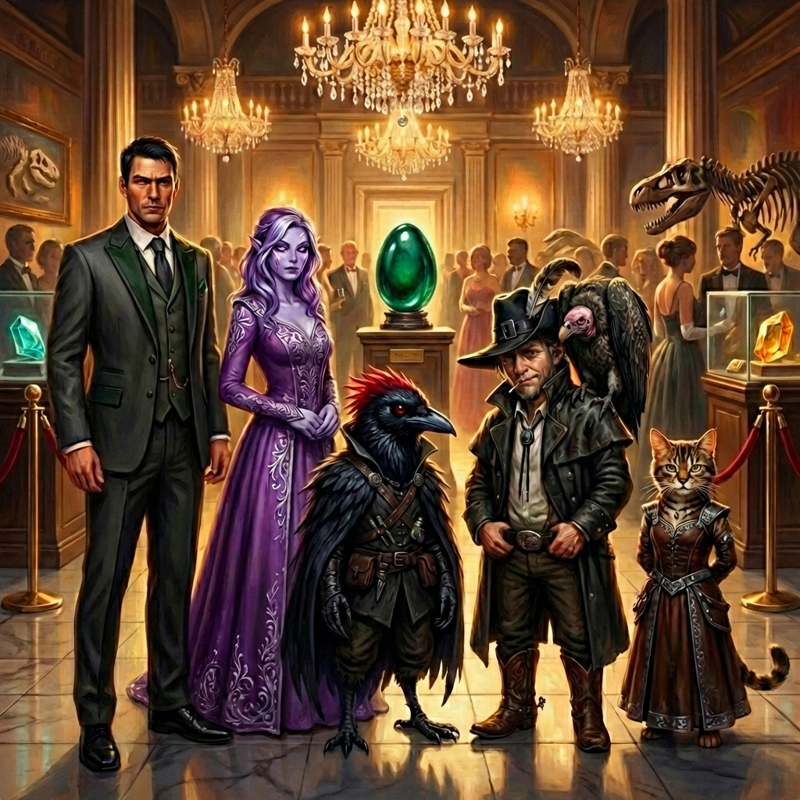
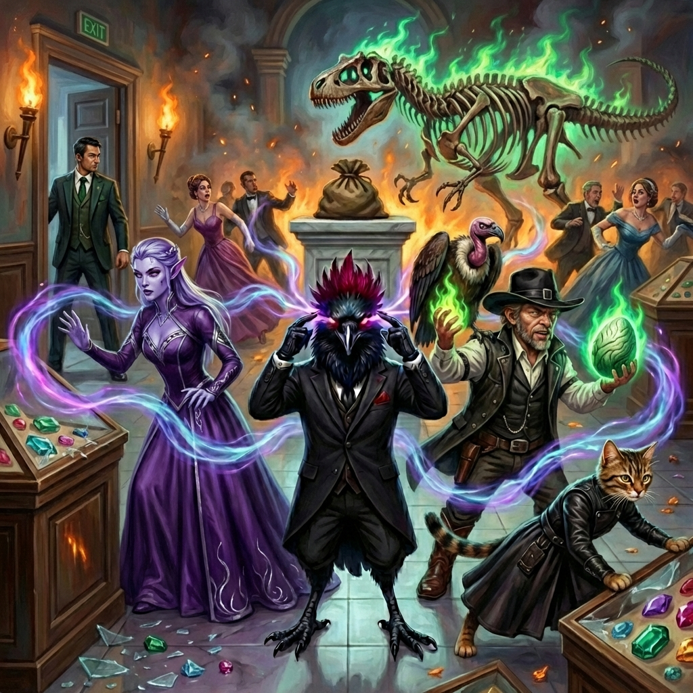
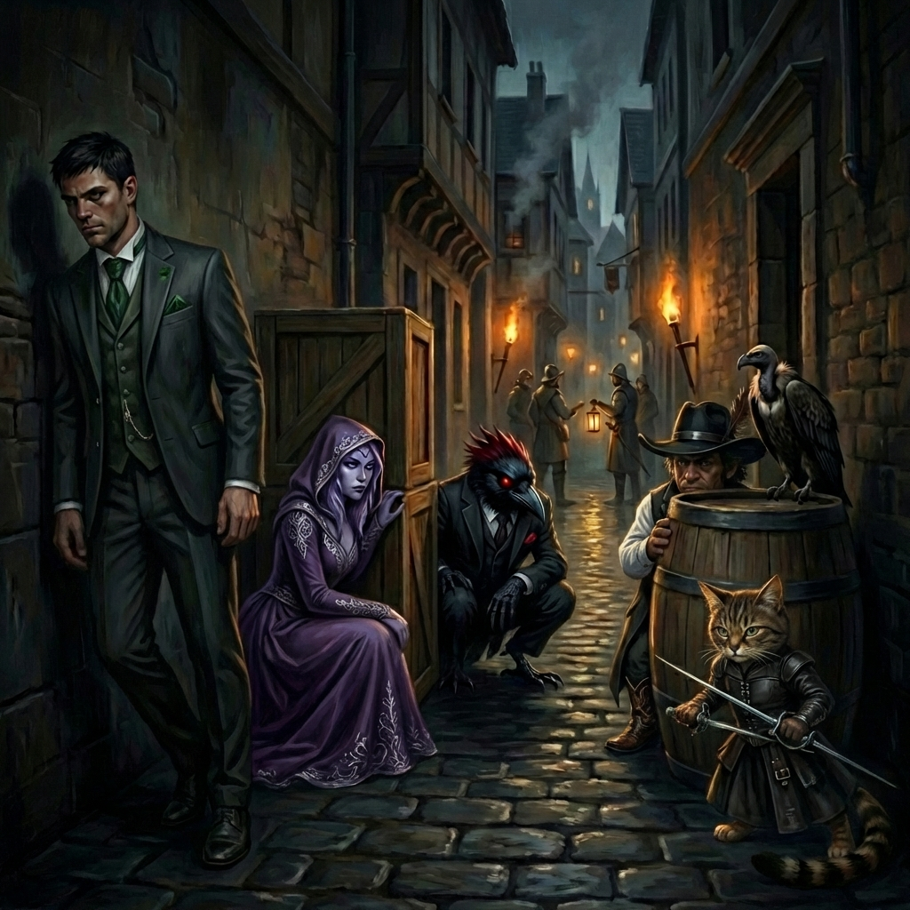

Session 1: The Murkmire Malevolence
Date: January 10, 2026
Location: Varkenbluff
Adventure: The Murkmire Malevolence (Keys From The Golden Vault)
Act 1: The Mission
The Golden Key
The party received an ornate envelope bearing the symbol of the Golden Vault. Inside was a golden key that fit a mysterious music box that appeared nearby. The Patron's voice delivered the mission:
"The egg of an eldritch horror has been mistaken for a historical object and is about to go on display at the Varkenbluff Museum of Natural History..."

Meeting Dr. Cassee Dannell
At the Sage's Quill Tavern, the party met their contact—a frantic, worried anthropologist in a purple hooded robe.
Key Intel Received:
- The "Murkmire Stone" is actually an Eldritch Egg set to hatch at midnight
- Dr. Dannell was fired from the university and caught trying to steal the egg
- She provided: 4 Gala Tickets, a Bag of Holding, and a rough museum map
- The egg's pedestal is pressure-sensitive—requires a swap with equal weight
Act 2: The Gala
Arrival & Recon
The party arrived at the Varkenbluff Museum for the opening gala. Captain Maryam Bikram of the City Watch checked tickets at the entrance. She notably approved of Slim's cowboy formal attire:
"The cowboy hat, the bolo tie and the boots... that's formal in my book, partner."
Sareena Shu at the gift shop was asked about obtaining a Murkmire Stone replica for the swap.
Curator Alda Arkin's Speech
Alda addressed the gathered guests in the Gemstone Wing with thinly-veiled contempt for Dr. Dannell:
"Some 'academics'—and I use that term loosely—would have you believe this is something sinister. A curse. A monster in disguise. It is frankly... embarrassing."
She invited guests to admire the Allosaur skeleton and the Murkmire Stone, emphasizing: "True power lies not in fear, but in possession."
Act 3: The Heist
The Distraction
Slim Pickens discretely cast Bonfire on the Allosaur skeleton, setting the ancient bones ablaze. The magical flames caused an unexpected reaction—the skeleton animated and began rampaging through the museum, thankfully running away from the gala attendees rather than toward them.
The Swap
While attention was fixed on the flaming, animated dinosaur, the party executed a coordinated swap:
- Slim replaced the Murkmire Stone with a 10 lb bag as a counterweight
- Freya immediately cast Minor Illusion over the bag to disguise it as the stone
The decoy held—for now.
The Escape
As the party moved with the egg, the jostling caused it to emit an eerie noise—alerting gala attendees that something was amiss and drawing attention to the team's escape. Despite being spotted, they managed to slip away:
- Slipped away to the attic
- Escaped through a skylight
- Climbed down the west side of the building
Rendezvous with Dr. Dannell
The party met Dr. Dannell in the tavern as planned. She quickly placed the Murkmire Stone (eldritch egg) into her Crystal Box, encasing it and rendering it inert—the city was saved from a midnight hatching.
"Sweet Lathander, look at the sky! The smoke... I told Alda, 'It's not a rock, it's a bomb'... Who's the scientist now, Alda?!"
Act 4: The Manhunt
Alda's Fury
Back at the museum, Alda ordered a citywide manhunt, specifically mentioning "the cowboy":
"Those guys, the cowboy, everybody. We need a manhunt. I don't care if it was them or not, we need to know where they're at."
Code Red
Guard Grendor Battleaxe and others began stopping citizens throughout the city:
"Captain Bikram's got us on high alert. Looking for some troublemakers from the museum incident."
Slipping Through
Thanks to a high Dexterity roll, the party managed to stay in the shadows and overheard the guards questioning citizens—but were never stopped themselves. They slipped through the manhunt undetected.
Aftermath & Cliffhanger
Mission Complete
The party successfully delivered the egg to Dr. Dannell, who encased it in her Crystal Box. The city was saved. Dr. Dannell paid the party their promised reward.
Dr. Dannell's New Problem
Dr. Dannell approached the party with a follow-up request. She wanted to go to the Dean to reclaim her position, armed with proof of the egg's true nature.
The Party's Response
The party declined. They accepted their reward and refused to help Dr. Dannell any further. Her tenure problems are not their concern.
The End
The Golden Vault Patron offered congratulations on the successful heist, albeit unorthodox.